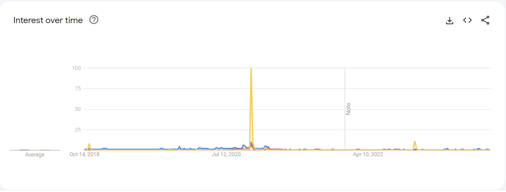
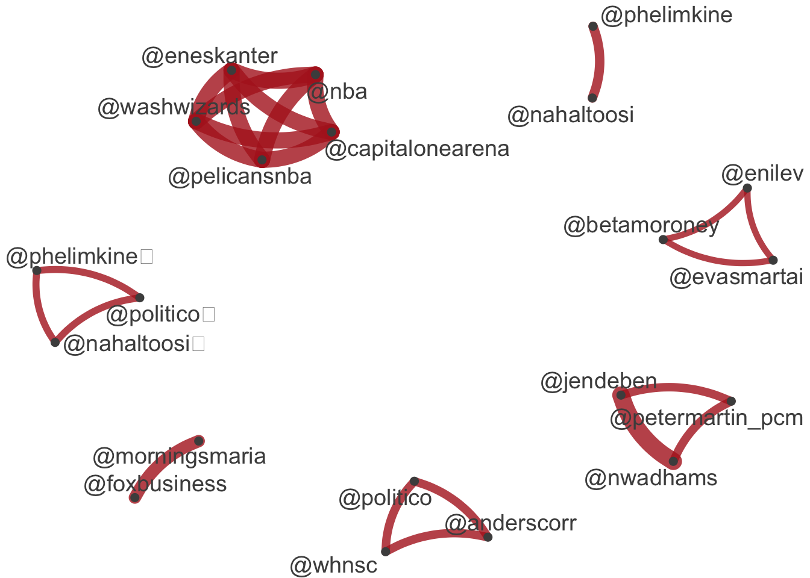
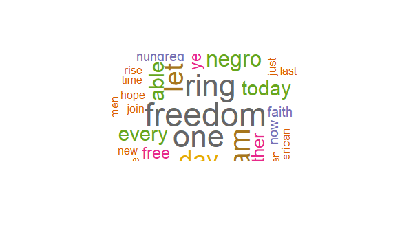
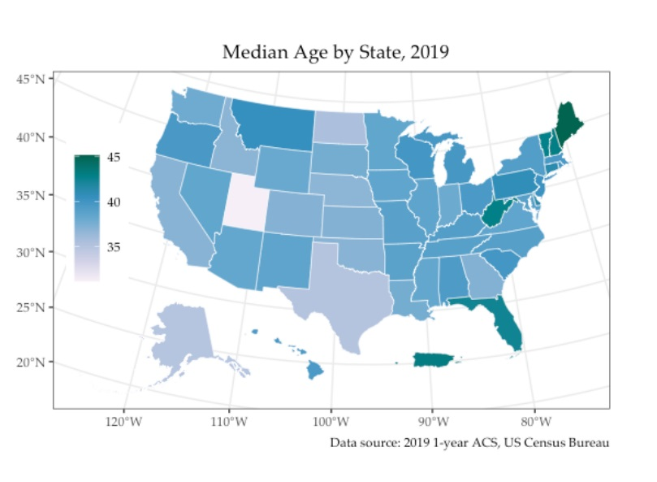
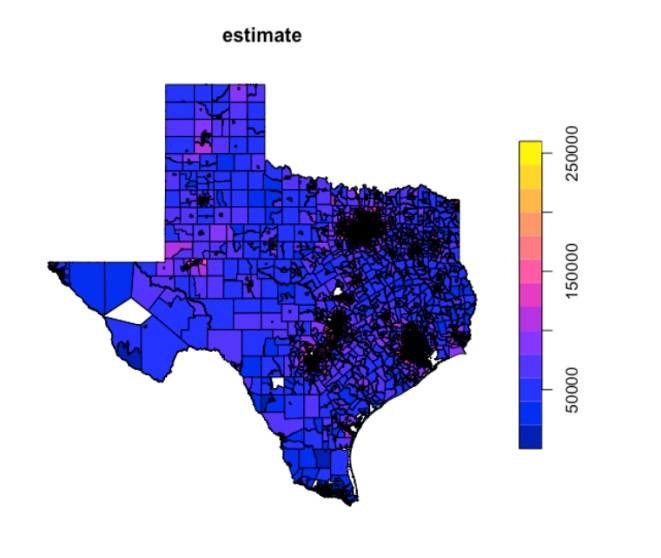
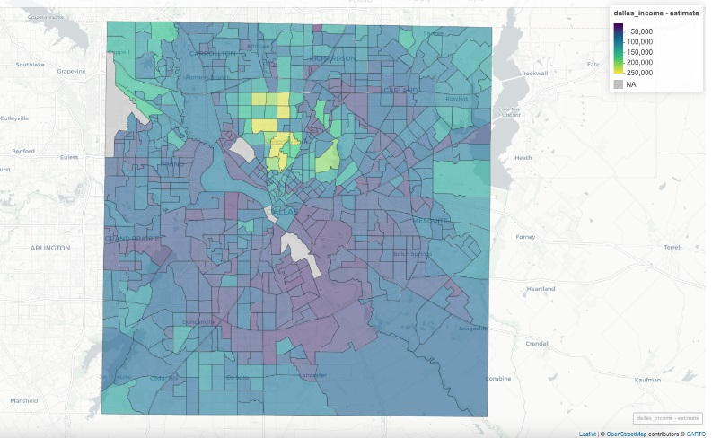
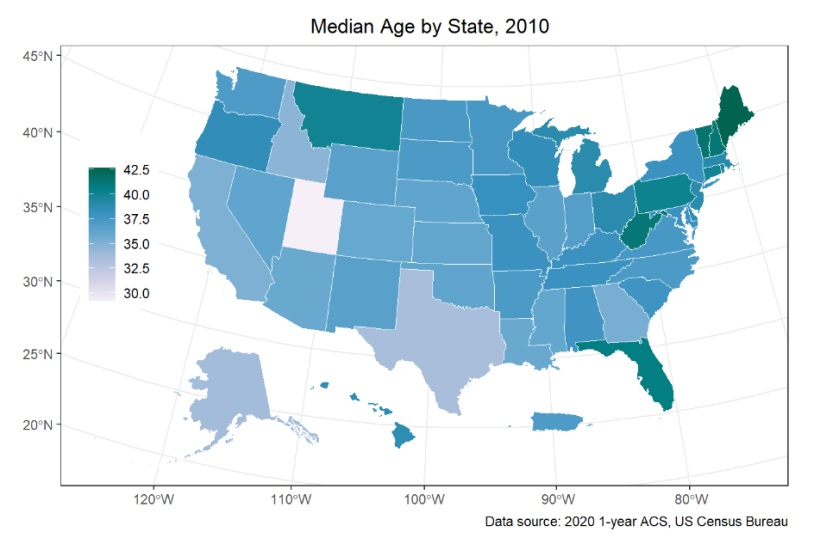
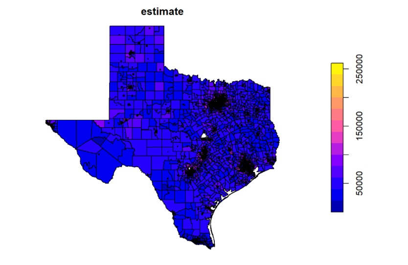
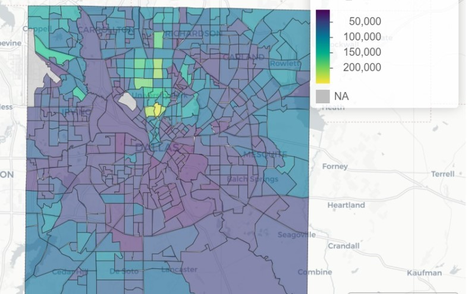
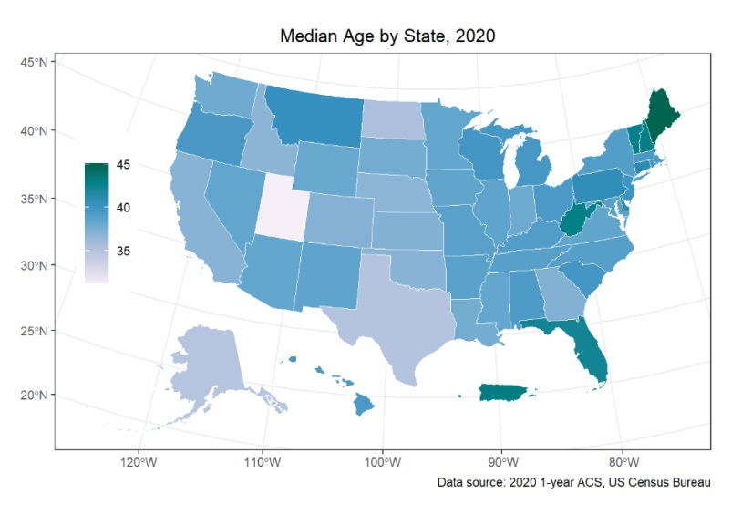

karimyiqbal
Karim Iqbal
This is my GitHub website. Please see assignments and research project and share your feedback at kxi220002(at)utdallas.edu
Research Paper
[Research Paperl](pdfs/goodland_finalproject.pdf)
Research Proposal
[Research Proposal](pdfs/goodland_researchproposal.pdf)
Assignments
Assignment 1
2a. The questionnaire primarily employs Multiple Choice (MC) questions, supplemented by a Descriptive Block (DB) and a Matrix question. The DB serves as an introductory segment, providing context but not soliciting data. The MC questions, forming the survey’s core, offer predefined choices for concise response gathering. An example includes querying preferences between purchasing or renting movies. The Matrix question, distinct in its format, allows for the simultaneous assessment of various service aspects, streamlining comparative analysis within a singular framework. This combination of question types facilitates an efficient yet comprehensive data collection approach.
2b. The questionnaire of this survey strikes a balance in its composition, primarily utilizing two types of questions. It includes descriptive text blocks, which serve to provide essential instructions or contextual information to the respondents, effectively setting the stage for the survey. Alongside these, the survey incorporates multiple-choice (MC) questions. These questions ask respondents to select from a set of predefined options, offering a clear and structured way to gather data. This combination of descriptive guidance and specific, choice-based questions ensures both clarity and ease of participation, crucial for effective data gathering in a survey context.
2c. The questions are ordered logically, starting with a descriptive text block that likely serves as an introduction or instructions to the respondents. This is followed by multiple-choice questions covering different aspects of movie rental experiences. The questions seem to be grouped by theme, progressing in a way that maintains a logical flow and coherence in the survey.
This analysis is based on the initial elements and the first few questions. For a more detailed understanding, a deeper analysis of each question and its specific content would be necessary.
7. To enhance the respondent experience, a few adjustments could be beneficial. First, considering the survey has 18 questions, ensuring relevance of each question is key to maintain respondent engagement. Additionally, including a few open-ended questions could provide richer, qualitative insights, as the current survey lacks ‘Text Entry’ (TE) type questions. Finally, for questions with more than five options, simplifying choices or using a drop-down format could help prevent respondent fatigue and make the survey more user-friendly.
Further assignment
4. The question delves into demographics beyond just race and ethnicity, probing into aspects like socioeconomic status and highest level of education. This approach enables a more comprehensive understanding of diversity and inclusion. By gaining insights into these deeper demographic facets, it becomes possible to draw nuanced conclusions about the respondents’ backgrounds and how these relate to their perspectives on diversity and inclusiveness.
Assignment 2
Use Google Trends website to: Search Trump, Biden and Election
Download the data Analyze the data
Dates
In the period analyzed from 10/10/2018 to 10/10/2023, the most searches for Trump, Biden, and election happened during the first week of November 2020, which is right before the presidential election. Two other spikes are seen around Jan 6th events and the mid-term elections in November 2022.
Intervals
The intervals between peaks are irregular, but the most notable peaks align with important political events, such as elections. The data shows seasonal trends with higher search interest around the time of elections and significant political events.

Use gtrendsR package to do a. (use gtrendsR01.R program)

What are the differences between the two methods?
Google Trends provides an intuitive web interface that allows users to easily visualize search interest over time and download data, but for deeper analysis or data manipulation, one must use external tools. In contrast, gtrendsR allows for direct data manipulation and complex analyses, leveraging R’s statistical capabilities. While Google Trends offers a simple and direct way to look at trends, gtrendsR provides more flexibility in data presentation, enabling users to customize plots extensively and integrate Google Trends data with other datasets for comprehensive analysis.
Assignment 3
Text Analytics using quanteda
1.Read about the package quanteda at https://quanteda.io/
2.Download quanteda_textanalytics01.R from Teams
3.Analyze:
a. Biden-Xi summit data
Quanteda package tokenized the tweets, created a document-feature matrix, and applied Latent Semantic Analysis to uncover underlying patterns in the text data. It identified and analyzed the most frequent hashtags and user mentions, providing a network visualization of these elements. The provided dataset is a comprehensive collection of Twitter data focused on the summit between US President Biden and Chinese President Xi Jinping in November 2021. It features over 1,000 observations, each representing a Twitter post. These posts include direct tweets, quotes, and retweets related to articles discussing the two leaders. The data also contains user information, such as the names of the individuals tweeting.


b. US presidential inaugural speeches
This dataset comprises records of US presidential inaugural addresses from President Eisenhower’s era through to President Trump’s tenure. Graphical representations within the dataset illustrate the prevalence of specific terms like “people,” “American,” and “communist” across these speeches.
i. Any similarities and differences over time and among presidents?
The lexical dispersion analysis of U.S. presidential inaugural speeches from Eisenhower to Biden shows that the usage of “American” has become more frequent in recent administrations, suggesting a contemporary emphasis on national identity, while the term “people” consistently figures across speeches, underscoring a constant focus on democratic values.

The word “American” was seldom used in the past but saw a notable rise starting with Clinton’s administration, indicating a shift in presidential rhetoric toward patriotism. Additionally, the term “communist” saw heightened usage during the Nixon and Reagan eras, aligning with the peak of the Red Scare, reflecting the socio-political concerns of the times.
4. What is Wordfish? (Do research on quanteda website)
Wordfish is a method used for analyzing texts in a one-dimensional framework, primarily focusing on how frequently words occur within documents. This technique is adept at assessing the positioning of documents on a singular axis, such as an ideological spectrum. By evaluating the usage frequency of specific words, Wordfish helps in organizing and interpreting data, as exemplified in the analysis of inaugural speech data.
Assignment 5
YouTube data
Run YouTubenews01.R. (prerequisites: YouTube developer API). Repeat the data collection of CNN's channel stats, video stats and comments.
Despite getting ClientID and ClientSecret, the script kept resulting in errors.
Analyze the stats and comments
Can you use quanteda to analyze the text data from YouTube comments?
Assignment 6
Web scraping
Run textmining01.R, rvest01.R and rvest02.R.
Organize the data in data frames and run text analytics (e.g. Wordcloud)

MLK Speech

Churchill speech
Challenge: How to download multiple pdf/data files using webscraping methods?
To download multiple PDF or data files using web scraping methods, we need to identify the URLs of the files we want to download. This is typically done using a web scraping library like rvest in R to parse the HTML of the webpage and extract the URLs. Once we have the URLs, we can use a function like download.file() in R, in combination with a loop, to programmatically download each file.
Assignment 7
Government data and parallel processing
- Run govdata01.R and parallel01.R. – Task completed
- Start planning for storage and computational resources: Note the space and time taken.
a. Plan data management (e.g. database)
It took 10.462103 minutes to get 234 records and the total size of PDFs downloaded was 106509630 bytes.
Organize the data in data frames – Task completed.
Learn other data storage methods (e.g. arrow, feather, parquet)
After learning about these storage methods, I found that for large, complex datasets, Parquet is often the best choice due to its efficiency in storage and speed in analytics queries. For smaller datasets or when high-speed input output is more critical, Feather is a good choice. If you need to share data between different programming languages or tools, Arrow provides a great platform due to its language-agnostic design.
Assignment 8
Census data and Spatial data
Read A Guide to Working with US Census Data in R - Task completed
Get an API key from Census using this website (http://api.census.gov/data/key_signup.html) - Task completed
Run spatialdata01.R and spatialdata02.R. - Task completed
The script “spatialdata01.R” retrieves Census data concerning the median age for each U.S. state in 2019, utilizing the ggplot2 package for visualization. It then generates a thematic map displaying the variations in median age across different states in the U.S.

The script “spatialdata2” gathers and displays Census data regarding income in Texas, with a special focus on Dallas County for the year 2020. It employs a range of color intensities on the maps to represent various income levels in Texas and Dallas.


Compare different years of data (e.g. 2010 and 2020)
Year 2010



Year 2020

Texas and Dallas income level graphs are already shared above in question 3.
In the Dallas area, there’s a noticeable overall uptick in income, particularly in the neighborhoods to the north of downtown Dallas. While incomes were fairly uniform in 2010, especially in the southern regions, more pronounced income disparities have emerged by 2020. The median age reported in the Census has shown little variation, with a marginally reduced median.